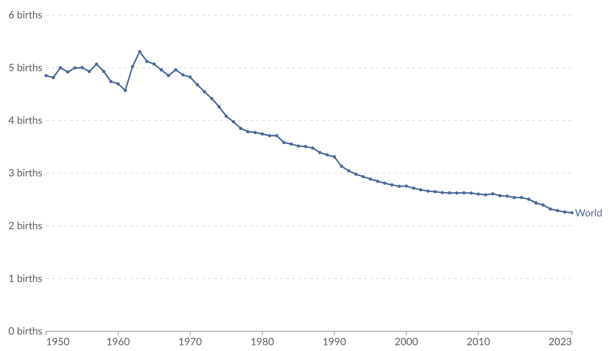

01
The long-run change
For much of human history, women had five or more children on average. Fertility varied across places and periods, but high fertility was once common in countries that now have very different economic and social conditions.
High-quality global estimates are available from 1950 onward. They show a major demographic transition: the global fertility rate stayed near five births per woman until about 1965 and then declined to less than half that level. The decline has occurred at different speeds across countries, so a global average should not be interpreted as the experience of every population.
02
What total fertility rate measures
The total fertility rate (TFR) summarizes age-specific fertility rates observed in one particular year. It is the number of live births a hypothetical woman would have if she experienced those rates throughout her reproductive life. TFR is therefore a period measure, not a record of the completed family size of one real generation of women.
Conceptual notation
Here, \(\mathrm{ASFR}_{i,t}\) is the annual number of births per 1,000 women in five-year age group \(i\) during year \(t\), with the seven groups covering ages 15–49. Multiplying the sum by five converts the grouped annual rates into an expected lifetime total.
03
Evidence: global fertility has more than halved
The figure shows a long period of relatively high global fertility followed by a sustained decline after the mid-1960s. The line does not fall at a constant rate: the pace varies across decades, and small year-to-year changes remain visible.

Read the figure and can you identify:
- What is the overall direction of change?
- When does the sustained decline begin?
- What is the change in percentage from 1965 (5.0) to 2023 (2.3)? Consider the equation.
04
A historical comparison
The global series begins in 1950, but fertility was high much earlier. Historical estimates for selected European populations before 1790 show total fertility rates between 4.5 and 6.2 births per woman. These figures also illustrate that marriage patterns and marital fertility both shaped population-level fertility.
| Country or region | Mean age at first marriage | Births per married woman | Never married (%) | Total fertility rate |
|---|---|---|---|---|
| Belgium | 24.9 | 6.8 | — | 6.2 |
| France | 25.3 | 6.5 | 10 | 5.8 |
| Germany | 26.6 | 5.6 | — | 5.1 |
| England | 25.2 | 5.4 | 12 | 4.9 |
| Netherlands | 26.5 | 5.4 | — | 4.9 |
| Scandinavia | 26.1 | 5.1 | 14 | 4.5 |
Source: reproduced from Roser (2014), based on Gregory Clark (2007), A Farewell to Alms. A dash indicates that the value was not reported in the source table.
05
What may explain declining fertility?
Fertility decisions respond to several connected social and economic conditions. The explanations below are not mutually exclusive, and the descriptive evidence on this page should not be treated as a causal test of any one explanation.
Women’s education and economic opportunities
Education and employment expand women’s choices and can raise the opportunity cost of time spent on childbearing and childcare. Education can also improve access to information and reproductive healthcare.
Lower child mortality
When more children survive, parents do not need as many births to reach a desired number of surviving children. Fertility may adjust with a delay as families learn that survival conditions have improved.
Greater investment in each child
As schooling becomes more important and child labour declines, the cost of raising and educating each child increases. Families may choose fewer children while investing more resources in each one.
Family planning
Access to contraception and reproductive health services helps people align actual births with the number and timing of children they want.